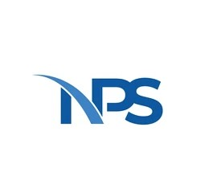

Page introuvable
Oups ! La page que vous cherchez n'existe pas ou a été déplacée. Pas de panique : le CV, lui, est toujours là.
Retour à l'accueil
CV — Professionnel
Oups ! La page que vous cherchez n'existe pas ou a été déplacée. Pas de panique : le CV, lui, est toujours là.
Retour à l'accueil